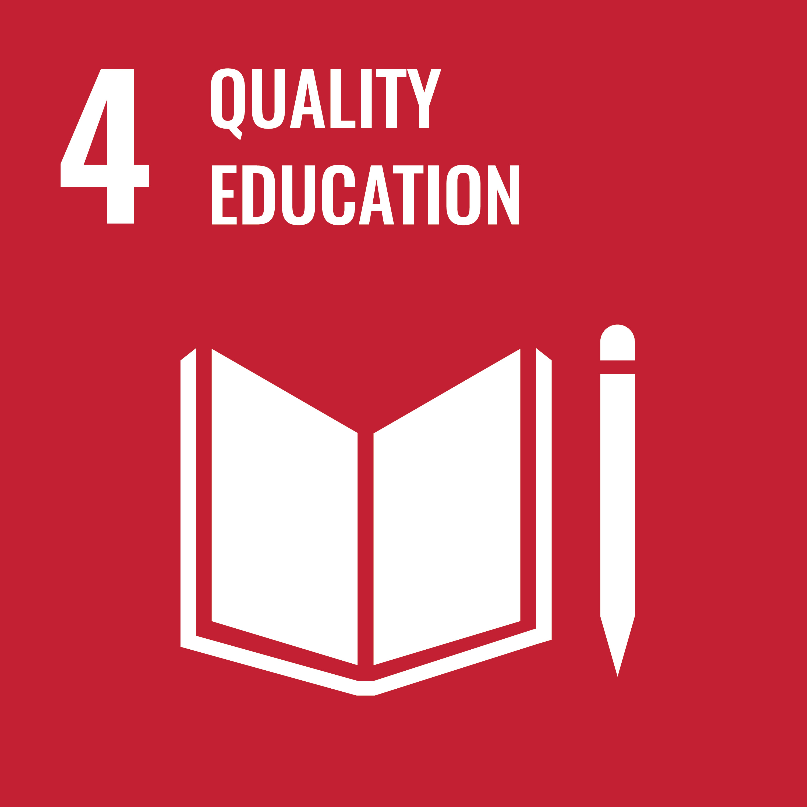
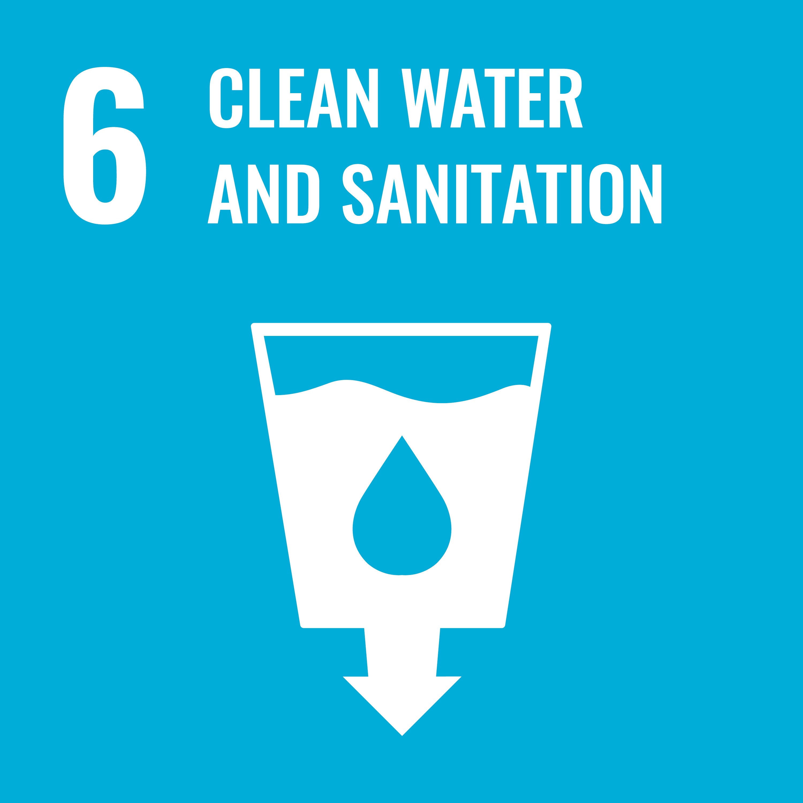

Where SDC's work sits within the 17 SDGs.
SDC is organised around the United Nations' 17 Sustainable Development Goals. These seven are the ones the organisation states as its stated focus areas — not a claim that all seven are already active in West Nile specifically.

Promoting maternal health, child nutrition, and medical programmes.

Supporting access to education, vocational training, and digital literacy.

Expanding access to clean drinking water and sanitation facilities.

Empowering local entrepreneurs and job-creation initiatives.

Scalable carbon sequestration through land use and agroforestry design.

Restoring degraded lands and protecting terrestrial biodiversity.

Multi-stakeholder collaboration across NGOs, local government, academia and the private sector.